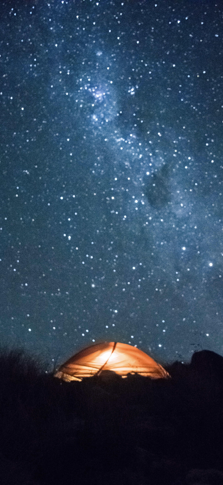

Hey, I made this site for a course in my masters to practice with ‘vibe coding’ (I’m studying Industrial Design). As I was free to choose what kind of site I wanted to build to practice, I decided to make a mini website around a photo album I’ve been making. It shows the best photos I’ve taken whilst traveling and living abroad. Most photos were shot on a Nikon 5300 and a few with a small analog. Hope you enjoy!
Important sidenote: The album was made for full screen, to see the pictures like this (can really recommend it). The next screen will walk you through the steps, only takes about 30 sec to do. (Can also recommend opening it on Safari, think it works better than Chrome).
To go to the photo’s, click here: ALBUM

45°23'02.8"S 167°36'39.2"E